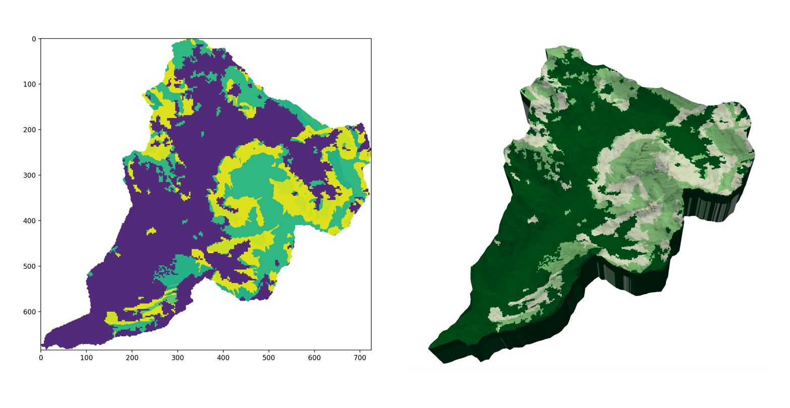

Adding an Attribute
Cell and node based attributes can be added to a stacked mesh - the attributes can be added either globally, across all layers, or local to one or more layers.
 Left: Soil map as read from an ASC file. Right: Soil map selectively applied to TIN layers.
Reading and applying an attribute
Basic syntax
To add an attribute to a layered TIN, use the command:
DEM.add_attribute(data,layers=[],dtype=int)
where layers is a list containing all layers to apply the attribute to,
and dtype is the desired attribute type (int or float). By default, the material will be applied to the mesh's material ID (or, 'cell color'). This can be changed with the name parameter.
As an example, consider a stacked mesh with three layers and an arbitrary floating point attribute. To apply that attribute only to the second layer:
my_dem.add_attribute(data,layers=[2],dtype=float)

By default, layers = None. This applies the attribute raster to every layer
of the mesh.
Note
Any number of attribute rasters can be applied to a mesh, as long as each is given a unique name.
Attribute Format
Attributes must fundamentally be an N\times M Numpy matrix. The dimensions of the matrix do not necessarily have to be the same as those of the DEM.
The data argument of addAttribute must be of type np.ndarray. To import
or convert from popular file formats, a table of functions is given below. Click
the function name to be redirected to its documentation.
| Data type | Import function |
|---|---|
GIS rasters (.asc, .tif, ...) |
gdal.Open(file) |
Plain-text matrix (.txt, .dat, ...) |
numpy.loadtxt(file) |
| Python list | np.array(list) |
HDF5 (.h5) |
h5py.File(file,'r') |
Note that when attributes are applied in TINerator, their domain spans that of
the parent DEM. In other words, it is assumed that the data matrix has
the same lower-left and upper-right corners as the DEM it is being applied
to.
Considering Data Types
As mesh nodes will not necessarily align within cell centers of attribute raster, interpolation on that raster is performed.
Based on the argument dtype, interpolation onto the mesh nodes will either be
continuous (float) or nearest-neighbor (int). This is critical for properties
such as soil ID, which only hold value as defined integers.
Applying a function
Assume that an attribute has been applied across all layers of the mesh. In some situations, it may be beneficial to change the attribute values based on the layer ID.
The below method maps a user-defined function and operator onto mesh data:
tinerator.DEM.map_function_to_attribute(self,operator='+',layers=None, attribute_name=None,outfile=None, fn=lambda layer: layer*100)
In other words, the new attribute data will be a result of:
where A_{i,j} is the attribute raster data at index i,j.
Example
Assume that we have soil types with unique values [1,3,5,10,12...], applied
to all layers of some mesh.
To better define, say, porosity as a function of layer in our simulation,
we would like to prefix each value with the layer ID.
In other words, changing
layer 1: [1,3,5,10,12...]
layer 2: [1,3,5,10,12...]
layer 3: [1,3,5,10,12...]
...
to
layer 1: [101,103,105,110,112...]
layer 2: [201,203,205,210,212...]
layer 3: [301,103,305,310,312...]
...
This can be accomplished by using the following function:
That is, adding 100 \cdot layer_{ID} to every attribute data point.
Consequently, we want the operator to be + and f(layer) = 100 \cdot layer, or,
my_dem.map_function_to_attribute(attribute_name='exampleAttribute', operator='+', fn=lambda layer: layer*100)